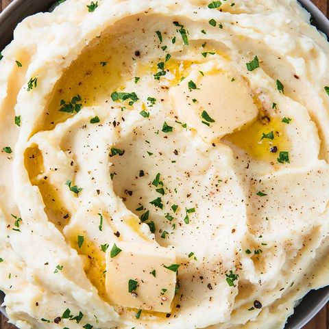

Mashed Potatoes

Ingredients
- 3 lbs potatoes
- 1 stick of unsalted butter
- 1/2 cup of whole milk
- 1.2 cup of sour cream
- salt and fresh ground pepper
Preparation
- Boil potatoes in a large pot for 16-18 minutes, until soft, with a generous pinch of salt. Drain and return potatoes to pot.
- Use a potato masher and mash until smooth.
- Meanwhile, melt butter and milk in a separate saucepan until warm.
- Add melted butter/milk combination and sour cream to potatoes and stir.
- Season to taste with salt and black pepper.